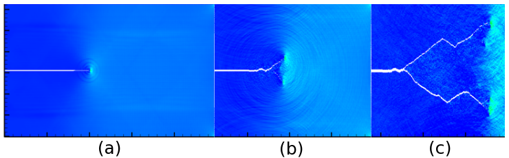
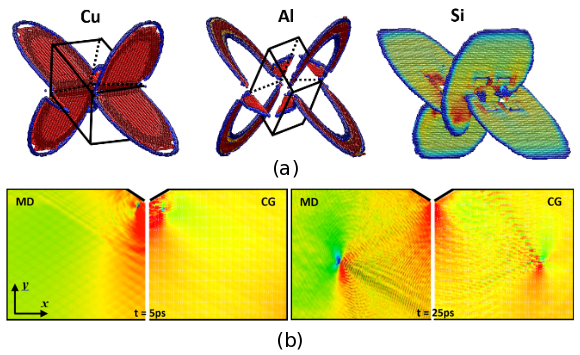
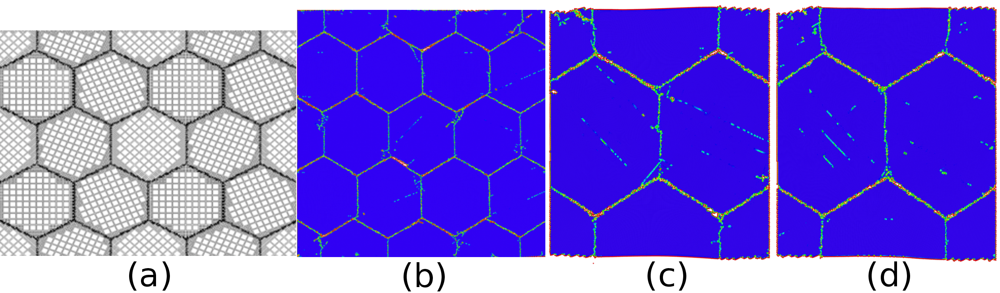
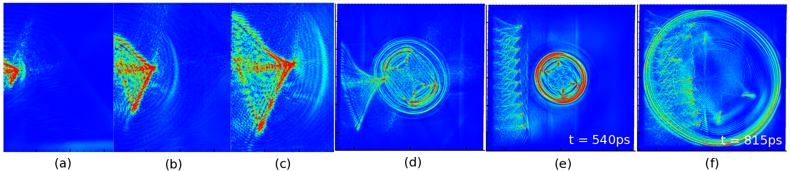

History
A brief history of CAC (2003-2017)
The CAC method is based on a concurrent atomistic-continuum formulation of balance laws [1,2] that are implemented using a finite element (FE) strategy, with the interatomic potential as the only constitutive relation. The formulation of the CAC balance equations, originally referred to as an atomic micromorphic theory or atomistic field theory (AFT) by Youping Chen and James D. Lee [1,3-8], is an extension of the Irving Kirkwood's formulation of "the hydrodynamics equations for a single component, single phase system" [9] to a two-level structural description of crystalline materials. The CAC formulation differs from that of classical continuum mechanics in that it employs a two-level structural description of materials. It is also distinct from the well-established theories of generalized continuum mechanics such as the Cosserat theory [10], micropolar theory [11,12], and micromorphic theory [13,14] in that the sub-level structural description is not continuous but discrete.
The first version of the CAC numerical tool was developed by Liming Xiong (Ph.D. 2011) and Qian Deng (Ph.D. 2011). The reformulated balance equations were numerically implemented using FE method with trilinear FE shape functions and nodal integration, and the simulation tool was demonstrated to be able to capture the phenomenon of phase transition in Si [15] and the dynamic processes of fracture, including crack initiation, propagation and branching (Fig. 1) [16,17].
|  |
|---|
| Figure 1. Time sequence of CAC simulations of a brittle material (2.24 \mu\mathrm{m} by 1.4 \mu\mathrm{m}) showing (a) stress waves emitting from a propagating crack; (b) and (c) crack branching as a result of the interactions between waves propagating from the crack tip and those reflected from the specimen boundaries [17] |
The form and capabilities of the CAC method were extended substantially as a direct result of collaborative efforts between University of Florida and Georgia Tech in modeling and simulations of the dynamics of dislocations: elements that have discontinuities between them were employed, and the Gaussian quadrature was used for integration in the coarse-grained domain. Nucleation and propagation of dislocations in the coarse-grained domain [18,19], passing dislocations from the atomistic domain to the coarse-grained domain [20], the growth of dislocation loops in Cu, Al and Si (Fig. 2(a)) [21], fast moving dislocations (Fig. 2(b)) [22], and other progresses [23-26], have been successfully simulated without special numerical treatment or supplemental constitutive relations. The name "CAC" for the methodology was coined by David L. McDowell in 2010.
|  |
|---|
| Figure 2. (a) CAC simulation results of the nucleation and growth of dislocation loops in Cu, Al, Si [21]. (b) Time sequences of dislocation motions in MD and fully coarse-grained CAC simulations [22]. |
The CAC code was rewritten using Fortran 90 by Shengfeng Yang (Ph.D. 2014) for multiscale simulation of polycrystalline ionic materials. This is the second-generation of the CAC code. It employs the Wolf method to calculate the long-range Columbic force and a special type of element (i.e., an incomplete element) to model regions with defects such as grain boundaries (GBs) in polyatomic materials. This version of the CAC code enables multiple meshing resolutions and simulation of two or more materials (e.g., Si and Ge), with multiple types of interatomic potentials, including the Buckingham and the Stillinger-Weber potentials. The CAC code was demonstrated to reproduce the equilibrium structures and energies of GBs in SrTiO_3, in good agreement with those obtained from existing experiments and density functional theory calculations. The code has been used to study the dynamic processes of crack initiation as well as the evolution of dislocation in single crystalline [27], bicrytalline [28], and polycrystalline SrTiO_3 (Fig. 3) [29,30].
|  |
|---|
| Figure 3. (a) A CAC model of polycrystalline SrTiO_3 (2D view) in which the GBs are modeled with atomic resolution and the grains with coarse-scale finite elements; (b) Central symmetry parameter plot of the deformed model showing the nucleation and propagation of many dislocations and their interactions with the GBs; The comparison between (c) CAC and (d) MD simulation results is shown at strain 8.7% [30]. |
The CAC code was also rewritten by Shuozhi Xu (Ph.D. 2016) using Fortran 2008. The code was optimized and the efficiency was significantly improved. The code includes the quasistatic version of CAC to carry out quasistatic simulations so as to obtain energy minimized atomic and nodal structures, in addition to dynamic simulations. Equipped with the Python scripting interface, this version of code, termed PyCAC, has been well tested for ductile fracture [31], quasistatic dislocation migration [32], screw dislocation cross-slip [33], edge dislocations bowing out from obstacles [34], dislocation multiplication from Frank-Read sources [35], dislocation/stacking fault interactions [36], and dislocation/GB interactions (Fig. 4) [37,38].
 |
|---|
| Figure 4. Snapshots of dislocation pile-up with dominant leading screw character impinging against a \Sigma 3{111} coherent twin boundary (CTB) [38]. In (a), five incoming dislocations approach the CTB subject to an applied shear stress. In (b), the leading dislocation is constricted at the CTB, where two Shockley partial dislocations are recombined into a full dislocation. In (c), with certain interatomic potentials, the dislocation effectively cross-slips into the outgoing twinned grain via redissociation into two partials. In (d), with different potentials, the redissociated dislocation is absorbed by the CTB, with two partials gliding on the twin plane in opposite directions. |
Based on the Fortran 90 code, Xiang Chen (Ph.D. 2016) extended the CAC method for space- and time-resolved simulation of the transient processes of the propagation of heat pulses in single crystals and across GBs [39] as well as the interactions between heat pulses and moving dislocations (Fig. 5) [40]. A phonon representation of the heat pulses, termed a coherent phonon pulse model [41], was created to mimic the coherent lattice excitation achieved via ultrashort laser pulses, and was incorporated into the framework of CAC to provide a coupled treatment for defect dynamics and phonon thermal transport. A first attempt was made to pass full phonon spectrum from the atomistic domain to the coarse-grained domain by introducing a wave-based interpolation scheme [42].
|  |
|---|
| Figure 5. Normalized kinetic energy distribution in simulations of the propagation of dislocations and a heat pulse: (a-c) a moving dislocation before meeting a heat pulse, showing that the motion of the dislocation is accompanied by radial-shaped wavefronts of phonons ahead of the moving dislocation and V-shaped wave tails in the wake of the dislocation; (d) the dislocation meeting with a propagating heat pulse; (e-f) an array of moving dislocations meeting with the heat pulse showing partially coherent partially diffuse scattering of the phonons by the moving dislocations [40]. |
The groups of Profs. McDowell, Chen, and Xiong are still actively advancing the CAC method. Keep an eye on the CAC publications for the latest progress!
References
- Youping Chen, James Lee. Atomistic formulation of a multiscale theory for nano/micro physics, Philos. Mag. 85 (2005) 4095-4126
- Youping Chen. Reformulation of microscopic balance equations for multiscale materials modeling, J. Chem. Phys. 130 (2009) 134706
- Youpig Chen, James D. Lee, Azim Eskandarian, Atomistic counterpart of micromorphic theory, Acta Mech. 161 (2003) 81-102
- Youping Chen, Jonathan Zimmerman, Anton Krivtsov, David L. McDowell. Assessment of atomistic coarse-graining methods, Int. J. Eng. Sci. 49 (2011) 1337-1349
- Youping Chen, James Lee, Liming Xiong. A generalized continuum theory and its relation to micromorphic theory, J. Eng. Mech. 135 (2009) 149-155
- Liming Xiong, Youping Chen, James D. Lee. Modeling and simulation of boron-doped nanocrystalline silicon carbide thin film by a field theory, J. Nanosci. Nanotech. 9 (2009) 1034-1037
- Liming Xiong, Youping Chen, James Lee. Simulation of dislocation nucleation and motion in single crystal magnesium oxide by a field theory, Comput. Mater. Sci. 42 (2008) 168-177
- Liming Xiong, Youping Chen, James D. Lee. Atomistic simulation of mechanical properties of diamond and silicon carbide by a field theory, Modelling Simul. Mater. Sci. Eng. 15 (2007) 535-551
- J.H. Irving, Jhon G. Kirkwood. The statistical mechanical theory of transport processes. IV. The equations of hydrodynamics, J. Chem. Phys. 18 (1950) 817-829
- Eugène Cosserat, François Cosserat. Théorie des corps déformables, Paris, (1909) 17-29
- Youpig Chen, James D. Lee, Azim Eskandarian. Micropolar theory and its applications to mesoscopic and microscopic problems, Comput. Modeling Eng. Sci. 5 (2004) 35-43
- A. Cemal Eringen. Theory of micropolar elasticity, in Microcontinuum Field Theories, Springer (1999) 101-248
- A. Cemal Eringen. Microcontinuum Field Theories: I. Foundations and Solids, Springer (1999)
- A. Cemal Eringen. Mechanics of micromorphic continua, in: Mechanics of Generalized Continua. IUTAM Symposia (International Union of Theoretical and Applied Mechanics), Springer (1968)
- Liming Xiong, Youping Chen. Coarse-grained simulations of single-crystal silicon. Modelling Simul. Mater. Sci. Eng. 17 (2009) 035002
- Qian Deng, Youping Chen, A coarse-grained atomistic method for 3D dynamic fracture simulation, J. Multiscale Comput. Eng. 11 2013 227-237
- Qian Deng, Liming Xiong, Youping Chen. Coarse-graining atomistic dynamics of brittle fracture by finite element method, Int. J. Plast. 26 2010 1402-1414
- Liming Xiong, Garritt Tucker, David L. McDowell, Youping Chen. Coarse-grained atomistic simulation of dislocations, J. Mech. Phys. Solids 59 2011 160-177
- Liming Xiong, Qian Deng, Garritt Tucker, David L. McDowell, Youping Chen. Coarse-grained atomistic simulations of dislocations in Al, Ni and Cu crystals, Int. J. Plast. 38 2012 86–101
- Liming Xiong, Qian Deng, Garritt Tucker, David L. McDowell, Youping Chen. A concurrent scheme for passing dislocations from atomistic to continuum domains, Acta Mater. 60 2012 899-913
- Liming Xiong, David L. McDowell, Youping Chen. Nucleation and growth of dislocation loops in Cu, Al and Si by a concurrent atomistic-continuum method, Scr. Mater. 67 2012 633–636
- Liming Xiong, Ji Rigelesaiyin, Xiang Chen, Shuozhi Xu, David L. McDowell, Youping Chen. Coarse-grained elastodynamics of fast moving dislocations, Acta Mater. 104 2016 143-155
- Liming Xiong, Shuozhi Xu, David L. McDowell, Youping Chen. Concurrent atomistic-continuum simulations of dislocation-void interactions in fcc crystals, Int. J. Plast. 65 2015 33-42
- Liming Xiong, Xiang Chen, Ning Zhang, David L. McDowell, Youping Chen. Prediction of phonon properties of 1D polyatomic systems using concurrent atomistic-continuum simulation, Arch. Appl. Mech. 84 2014 1665-1675
- Liming Xiong, David L. McDowell, Youping Chen. Sub-THz Phonon drag on dislocations by coarse-grained atomistic simulations, Int. J. Plast. 55 2014 268-278
- Liming Xiong, Youping Chen. Effects of dopants on the mechanical properties of nanocrystalline silicon carbide thin film, Comput. Modeling Eng. Sci. 24 (2008) 203-214
- Shengfeng Yang, Liming Xiong, Qian Deng, Youping Chen. Concurrent atomistic and continuum simulation of strontium titanate, Acta Mater. 61 2013 89–102
- Shengfeng Yang, Youping Chen. Concurrent atomistic and continuum simulation of bi-crystal strontium titanate with tilt grain boundary, Proc. R. Soc. A 471 2015 20140758
- Shengfeng Yang, Youping Chen, Concurrent atomistic-continuum simulation of defects in polyatomic ionic materials, in Multiscale Materials Modeling for Nanomechanics ed: Christopher R. Weinberger, Garritt J. Tucker, Switzerland: Springer International Publishing, 2016
- Shengfeng Yang, Ning Zhang, Youping Chen. Concurrent atomistic-continuum simulation of polycrystalline strontium titanate, Philos. Mag. 95 2015 2697-2716
- Shuozhi Xu, Liming Xiong, Qian Deng, David L. McDowell. Mesh refinement schemes for the concurrent atomistic-continuum method, Int. J. Solids Struct. 90 2016 144-152
- Shuozhi Xu, Rui Che, Liming Xiong, Youping Chen, David L. McDowell. A quasistatic implementation of the concurrent atomistic-continuum method for FCC crystals, Int. J. Plast. 72 2015 91–126
- Shuozhi Xu, Liming Xiong, Youping Chen, David L. McDowell. Shear stress- and line length-dependent screw dislocation cross-slip in FCC Ni, Acta Mater. 122 2017 412-419
- Shuozhi Xu, Liming Xiong, Youping Chen, David L. McDowell. Edge dislocations bowing out from a row of collinear obstacles in Al, Scr. Mater. 123 2016 135-139
- Shuozhi Xu, Liming Xiong, Youping Chen, David L. McDowell. An analysis of key characteristics of the Frank-Read source process in FCC metals, J. Mech. Phys. Solids 96 2016 460-476
- Shuozhi Xu, Liming Xiong, Youping Chen, David L. McDowell. Validation of the concurrent atomistic-continuum method on screw dislocation/stacking fault interactions, Crystals 7 (2017) 120
- Shuozhi Xu, Liming Xiong, Youping Chen, David L. McDowell. Sequential slip transfer of mixed character dislocations across \Sigma 3 coherent twin boundary in FCC metals: A concurrent atomistic-continuum study, npj Comput. Mater. 2 2016 15016
- Shuozhi Xu, Liming Xiong, Youping Chen, David L. McDowell. Comparing EAM potentials to model slip transfer of sequential mixed character dislocations across two symmetric tilt grain boundaries in Ni, JOM 69 (2017) 814-821
- Xiang Chen, Weixuan Li, Liming Xiong, Yang Li, Shengfeng Yang, Zexi Zheng, David L. McDowell, Youping Chen. Ballistic-diffusive phonon heat transport across grain boundaries, Acta Mater. 136 (2017) 355-365
- Xiang Chen, Liming Xiong, David L. McDowell, Youping Chen. Effects of phonons on mobility of dislocations and dislocation arrays, Scr. Mater. 137 (2017) 22-26
- Xiang Chen, Aleksandr Chernatynskiy, Liming Xiong, Youping Chen. A coherent phonon pulse model for transient phonon thermal transport, Comput. Phys. Comm. 195 (2015) 112–116
- Xiang Chen, Adrian Diaz, Liming Xiong, David L. McDowell, Youping Chen. Passing waves from atomistic to continuum, J. Comput. Phys. 354 (2018) 393-402